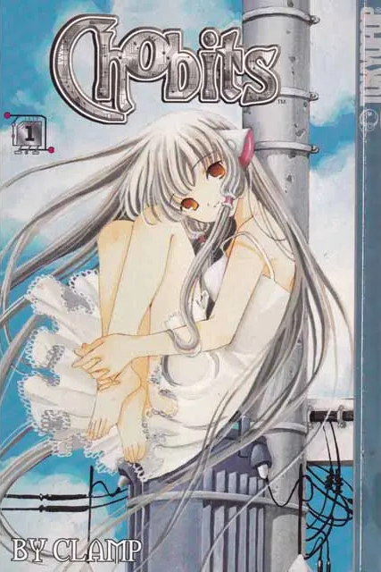
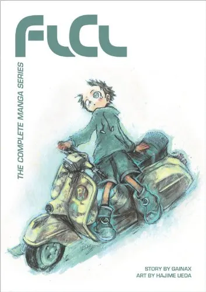

Assignment 4.2: Build a Web Page Exercise - Part 4
Adventure/Martial arts/Supernatural
(Author: Yoshihiro Togashi)
Romantic comedy/Science fiction

(Author: CLAMP)
Comedy/Science Fiction/Surrealism

(Author: Gainax)
Back to Landing Page